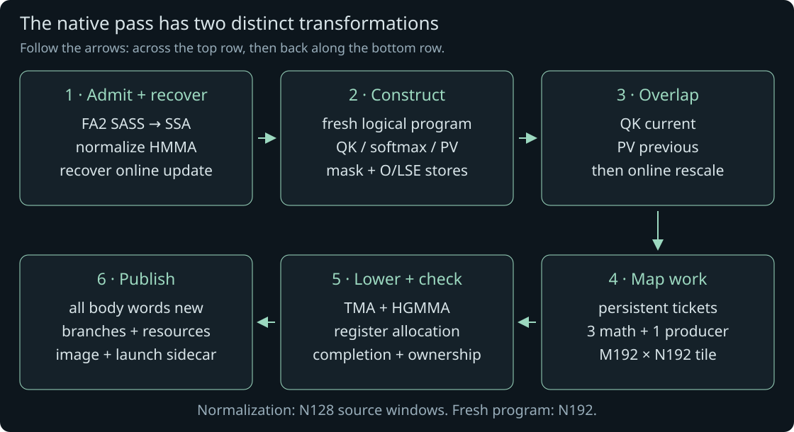
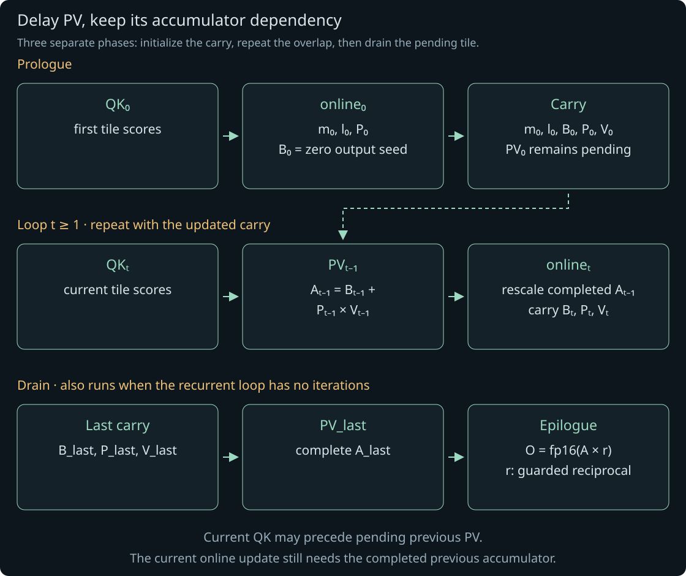
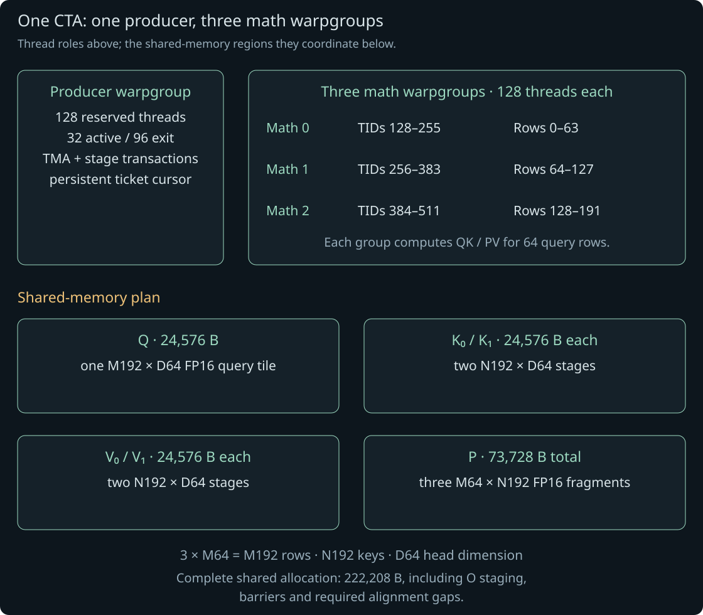
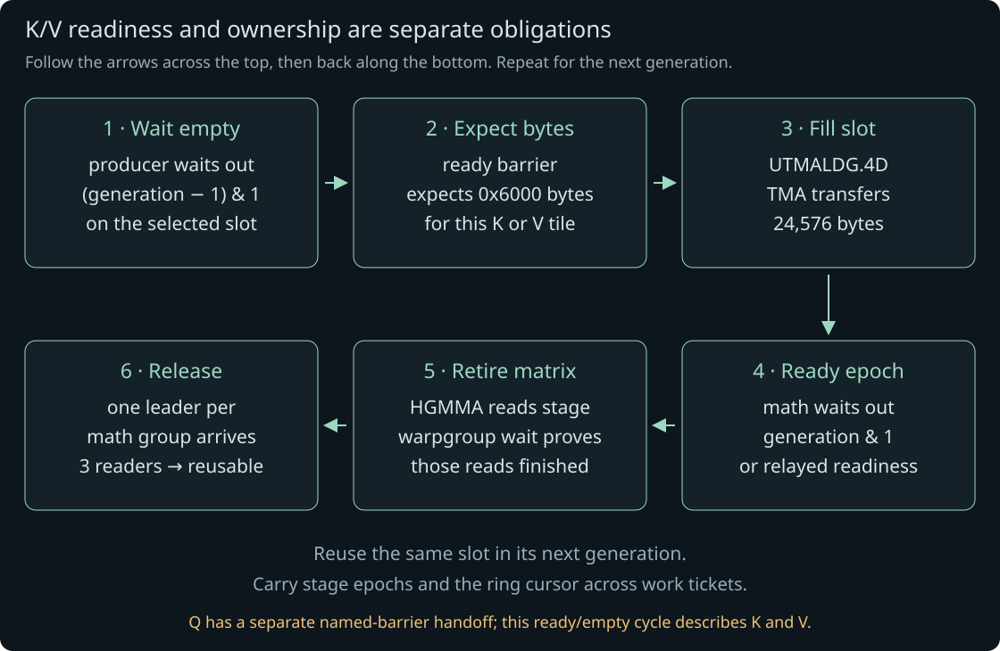

SASS encoding explorer.
Isolate a field. Record what changed. Build the evidence.
FA2 → a fresh Hopper program. Follow the golden egg.
This example follows flash-attention-resynth: source computation → logical attention → overlap → work mapping → fresh machine code. Open the admitted FA2 input and its rebuilt output below; both cubins are included.
This result took over 200 pass creation attempts.
Noncausal · dense FP16 · H=8, D=64 · bundled input and rebuilt program.
What actually changes?
The pass first normalizes the admitted FA2 matrix windows, then reconstructs the computation and generates an entirely new kernel body. The final result changes the tile shape, thread roles, transport, instruction schedule and launch ABI together. Read the six chapters below for the dependencies and actual instruction sequences behind each component.

Instruction panels show representative regions from the two included cubins. Their PCs belong to different programs; the arrows describe replacement of a logical task, rather than an edit at the same address. Diagrams can be scrolled on smaller screens.
One gnome. One egg. A golden omelette.
Follow his mountain adventure alongside six stages of the recorded native pass. The story is an illustration; the compiler notes describe the actual transformation.
-
01 / ADMIT & RECOVER
The mountain calls
At dawn, a red-hatted gnome sets out with a grin. Across the gap, a green-eyed falcon watches over a golden egg. What a prize! He studies every cliff, every turn, and every possible way home before beginning his adventure.
Recover the source computation
Admission checks the reviewed FA2 instructions and metadata, allowing supported parameter relocation. HGMMA normalization uses independently constructed instruction forms. Semantic recovery follows SSA witnesses for the online arithmetic; mask, iteration and epilogue facts additionally come from the bounded reviewed profile.
Contract Know exactly which source program is admitted before changing it.
Inside the pass · admission, matrix normalization and semantic recovery
Input: the selected FA2 SASS function, its executable metadata and the pinned target ABI image. Admission matches a reviewed executable profile, allowing supported parameter-bank relocation. A familiar symbol name alone is insufficient.
The source matrix normalizer rewrites every supported HMMA QK/PV window, rebuilding its analysis after each change and refusing leftover HMMA. It constructs its instruction forms independently. Source scalar SSA then supplies witnesses for the row maximum, exponential weights, denominator, packed FP16 probabilities and output rescale. The complete mask, iteration domain and epilogue still rely on the reviewed program profile.
Actual admitted FA2 matrix region
/*1180*/ LDSM.16.M88.4 R12, [R3+0x4000]; /*11a0*/ LDSM.16.M88.4 R4, [R234+0x2000]; /*1230*/ HMMA.16816.F32 R56, R4.reuse, R12, RZ; /*1240*/ HMMA.16816.F32 R116, R4, R14, RZ;Intermediate source normalization · symbolic roles
QK: shared Q/K descriptors + WARPGROUP.ARRIVE 4 × HGMMA.64x128x16.F32 per M64 source half WARPGROUP.DEPBAR.LE gsb0, 0x0 PV: packed P + transposed V descriptor 8 × HGMMA.64x64x16.F32 per M64 source half (N128 reduction; two M64 halves) WARPGROUP.DEPBAR.LE gsb0, 0x0The left panel is exact disassembly; the right describes the normalization’s constructed instruction families, with symbolic operands. It is not the final N192 body. Source in
passes/flash-attn-resynth/mlir/:hgmma_emit.cpp,attention_semantic.cppandattention_semantic_ir.cpp. -
02 / CONSTRUCT
A route across the water
He rows across the sparkling mountain lake, already imagining his prize. The golden egg gleams beside the green-eyed falcon on the rocky shore. Smiling to himself, he picks a route between the submerged rocks: across the water, up to the nest, and back out again.
Construct a complete logical program
attention_program_emit builds tensor reads, descending key tiles, masking, online softmax, PV and O/LSE stores in func/scf/memref/vector/arith/math IR. The pinned FA3 image supplies the publication ABI container; its selected instruction body is replaced completely.
Contract Reconstruct the complete computation and its memory effects, including the epilogue.
Inside the pass · rebuild the full attention computation
Output of construction: a fresh
attention_work_tilefunction with Q/K/V reads, descending key tiles, masks, online state, PV accumulation, O and LSE stores. Three M64 groups will later cover one M192 query tile; this noncausal program uses N192 key tiles and D64.For processing step t, let A be the unnormalized output and m the unscaled row maximum. The base-two scale is
λ = fp32(0.125 × log2(e)). The readable recurrence is:Logical recurrence · one query row
S_t = Q × K_tᵀ // invalid scores → −∞ m_t = max(m_previous, rowmax(S_t)) p_t = 2^(S_t × λ − m_t × λ) α_t = 2^((m_previous − m_t) × λ) l_t = α_t × l_previous + rowsum(p_t) P_t = fp16(p_t) A_t = α_t × A_previous + P_t × V_t r = l_last == 0 ? 1 : reciprocal(l_last) O = fp16(A_last × r) LSE = l_last == 0 ? +∞ : fma(m_last, 0.125, ln(l_last))The denominator sums the FP32 weights; PV consumes their FP16 rounding. The emitted program keeps explicit FTZ/FMA operations, approximate exp/reciprocal permissions and safe empty-tile state. It allows reassociation, so this is not a bitwise-equality claim. Empty rows keep zero weights, denominator and output; their maximum remains −∞ until valid scores appear. The epilogue handles zero denominator and LSE separately.
Native semantic IR · exact lines 113, 123, 133–134
%28 = math.fma %5, %27, %25 : vector<64x192xf32> %35 = math.exp2 %34 fastmath<afn> : vector<64x192xf32> %42 = arith.truncf %41 : vector<64x192xf32> to vector<64x192xf16> %43 = vector.multi_reduction <add>, %41, %cst_3 [1] : vector<64x192xf32> to vector<64xf32>Fresh output · exact representative instructions
/*1990*/ FFMA.FTZ R24, R24, R0, -R10; /*19d0*/ MUFU.EX2 R24, R24; /*2ca0*/ F2FP.F16.F32.PACK_AB R24, R25, R24; /*2cb0*/ F2FP.F16.F32.PACK_AB R25, R27, R26; /*2cc0*/ F2FP.F16.F32.PACK_AB R26, R29, R28; /*2cd0*/ F2FP.F16.F32.PACK_AB R27, R31, R30; /*2ce0*/ STSM.16.M88.4 [R15], R24;These excerpts have intervening instructions, including FTZ steps, omitted. Scalar lowering regenerates FFMA, exponentiation, reductions and packing from semantic IR. P publication writes shared fragments for later PV; it does not replace softmax with a different formula.
-
03 / OVERLAP
Between the falcon’s glances
He ducks behind the boulder with a mischievous smile. The falcon turns toward the lake; he inches closer. It turns back; he holds still. The egg is almost within reach, and every move must fit between the watcher’s glances.
Overlap current QK with previous PV
attention_program_overlap rewrites the loop into a prologue, carried state and final drain. Current-tile QK precedes previous-tile PV; that PV must finish before the current online update rescales its output. Logical overlap must still be realized and checked in the emitted machine program.
Contract Preserve the recurrence and finish the final carried PV work.
Inside the pass · move PV without breaking the online recurrence
A serial logical loop computes
QK_t → online_t → PV_t. The overlap transform leavesPV_tpending and starts the next QK first. It carries five values:(m, l, B, P_pending, V_pending), whereB_t = α_t × A_previousis the output seed before adding tile t.
Horizontal arrows show execution order. The current QK scores and completed previous PV both feed the current online update. Processing steps advance while actual key-tile indices descend. QK does not need the previous output accumulator, so it can move ahead. The current online update does need that accumulator: previous PV must finish before it is rescaled. The final drain adds the last pending PV, including when the recurrent loop has zero iterations.
Decisive native IR data flow · excerpt, types omitted
%60 = vector.contract ... %44, %59, %cst_53 // QK current %62 = vector.contract ... %arg13, %arg14, %arg12 // PV previous %63:4 = func.call @attention_online_2( %61, %cst_26, %arg10, %arg11, %62) // %62 is the completed previous output, not an old seed. scf.yield %63#0, %63#1, %63#3, %66, %65 // Outside the loop: final contract(P_pending, V_pending, B).The same rewrite proves the descending key loop’s recurrent N192 tiles are full before removing their key-tail comparison. The first tile can extend beyond S and keeps that check; query-row checks remain. Logical overlap alone does not prove physical asynchronous safety or a speedup.
Source in
passes/flash-attn-resynth/mlir/:attention_program_overlap.cpp. The bundled native IR shows current QK at line 629, previous PV at 646, its use by the online call at 647, carry at 671 and final drain at 673. -
04 / MAP WORK
One egg, one owner
One shaking hand, one careful reach. He lifts the golden egg and holds it close. Behind him, feathers rustle. He does not smile. He runs for the boat, checking every foothold before trusting it with his weight.
Assign work and shared stages
attention_program_schedule plans M192 as three M64 consumers and one producer warpgroup: 512 threads, two K stages and two V stages. This noncausal N192 case uses shared P and static persistent tickets. The causal N128 route uses register P and a dynamic queue.
Contract Cover every tile once; keep producer/consumer tickets and stage ownership consistent.
Inside the pass · persistent work and physical roles
The noncausal mapping assigns each query tile exactly once with a grid-stride ticket. It does not use the causal atomic-ticket/mailbox route. Every role must decode the same ticket into the same batch, head and query tile.
Work assignment · readable pseudocode
query_tiles = ceil(S / 192) for ticket = CTAID.X; ticket < B × 8 × query_tiles; ticket += grid.x: m_block = ticket % query_tiles head = (ticket / query_tiles) % 8 batch = (ticket / query_tiles) / 8 query_begin = 192 × m_block
The producer warpgroup reserves TIDs 0–127, but only TIDs 0–31 continue after register deallocation. Math TIDs 128–511 cover three 64-row bands. Buffer sizes are exact; the diagram is schematic. The producer relinquishes registers from 128 to 32; math threads acquire 160. Shared P has one M64×N192 band per math group. Q, two K slots and two V slots each occupy 24,576 bytes; P uses 73,728 bytes. Output staging, barriers and alignment bring the total to 222,208 bytes.
The subtle part is the work boundary: a new query ticket does not reset the K/V slot cursor or stage generations. Producer and consumers carry those counters forward together. Resetting one role can wait for the wrong generation or overwrite a tile still being read.
Source in
passes/flash-attn-resynth/mlir/:attention_program_schedule.cpp,attention_machine.cpp,attention_program_producer.cppandattention_program_allocate.cpp. -
05 / LOWER & CHECK
The lake wakes up
The lake erupts behind the boat. A moss-covered water troll rises through the spray; a dark serpent cuts across his escape. He grips the egg to his chest and paddles in panic toward the gap between them. Moving faster only helps if the next stretch of water is clear.
Check physical hazards before reuse
Machine lowering emits producer TMA, consumer HGMMA/scalar work, barriers and the epilogue. Controls and allocation check register groups and outstanding accesses. The asynchronous protocol separately checks stage generations, byte counts, waits and releases; scoreboard waits alone cannot discharge matrix completion or stage ownership.
Contract Do not overwrite a register or shared stage while an asynchronous reader still owns it.
Inside the pass · replace transport, issue matrix work and prove safe reuse
The generated producer replaces the source transport strategy with tensor-map TMA transactions. That changes addressing, descriptors and synchronization together. Each K/V slot has a ready barrier (initial count 1) and an empty barrier (count 3): one release from each math group.

A ready barrier proves bytes arrived. The empty barrier proves the previous generation has no remaining matrix readers. Ordinary scoreboard controls cannot stand in for either obligation. FA2 transport · representative exact PCs
/*0700*/ LDGSTS.E.BYPASS.LTC128B.128 [R246], desc[UR16][R4.64]; /*0de0*/ LDGDEPBAR; /*0e80*/ DEPBAR.LE SB0, 0x0; /*0e90*/ BAR.SYNC.DEFER_BLOCKING 0x0;Generated K0 transaction · exact PCs, intervening setup omitted
/*69b0*/ VIADD R8, R5, 0x6000; // shared K0 /*69d0*/ VIADD R9, R5, 0x30010; // K0-ready barrier /*6a30*/ IMAD.MOV.U32 R10, RZ, RZ, 0x6000; /*6a40*/ @P4 SYNCS.ARRIVE.TRANS64 RZ, [R5+URZ+0x30010], R10; /*6a50*/ UTMALDG.4D [UR24], [UR34], desc[UR38];0x6000means exactly 24,576 expected bytes. The omitted setup builds the destination/barrier/four-coordinate tuple in UR24–29 and K’s tensor-map handle in UR34–35.Generated QK · one M64×N192×D64 contraction
/*0b20*/ WARPGROUP.ARRIVE; /*0b30*/ HGMMA.64x192x16.F32 R24, gdesc[UR32], RZ, !UPT; /*0b40*/ HGMMA.64x192x16.F32 R24, gdesc[UR36], R24; /*0b50*/ HGMMA.64x192x16.F32 R24, gdesc[UR40], R24; /*0b60*/ HGMMA.64x192x16.F32 R24, gdesc[UR44], R24, gsb0; /*0b70*/ WARPGROUP.DEPBAR.LE gsb0, 0x0;Four K16 issues cover QK’s D64 reduction. PV instead reduces N192, so it uses twelve
HGMMA.64x64x16.F32issues with.tnspB. The first QK starts at zero; PV adds into its rescaled output seed. Registers and descriptors are allocated for whole implicit groups, not just the named first register.In a recurrent overlap step,
WARPGROUP.DEPBAR.LE gsb0, 0x1retires the older QK batch while previous PV can remain in flight. The pass can compute an independent maximum prefix, then requiresgsb0, 0x0before consuming PV’s result, releasing V or overwriting shared P. Named barriers 1→2→3 relay issue credit between the math groups.Q is different: named barrier 10, with 416 participants (384 math + 32 producer threads), hands Q ownership back after the final QK. Final PV/output can then finish using separate P/V/O storage. Reusing the generic Q-empty loop here would describe the wrong protocol.
Source in
passes/flash-attn-resynth/mlir/:attention_program_transfer.cpp,attention_program_matrix.cpp,attention_program_consumer.cpp,attention_program_controls.cppandattention_program_allocate.cpp. The snippets are representative regions of two different generated layouts, not same-PC patch replacements. -
06 / PUBLISH
A golden omelette at last
Home at last. Outside his cottage window, the mountain lake lies quiet again. He cracks the golden egg into a warm pan and folds a shining golden omelette. With the chase behind him and breakfast sizzling, the gnome beams over the stove.
Publish a body that can be launched
Publication requires regenerated selected-body words, rechecks the physical protocol and rebuilds resource/branch metadata in the pinned ABI container. This pair is 3,112 FA2 words → 1,929 generated words. Its sidecar binds both hashes to 2,944 parameter bytes, 512 threads and 222,208 dynamic shared bytes.
Contract The image, metadata, host adapter and hash-bound launch sidecar must agree.
Inside the pass · publish a complete executable artifact
The publisher clones the generated machine function and reruns control assignment, register allocation and physical-protocol checks. It requires every selected body word to be regenerated. The pinned FA3 image supplies a checked publication ABI container, not a copied instruction body.
- Machine bodyLower fresh words; resolve branches and instruction offsets.
- ELF imageRebuild resource and barrier metadata; preserve the checked parameter ABI and reject incompatible relocations.
- Launch packageBind the input/output hashes to thread count, shared storage and the supported adapter’s argument layout.
The input has 3,112 selected words; the output has 1,929. The bundled pair changes from a 472-byte source parameter block to a 2,944-byte target parameter ABI. That is why generating a cubin and keeping the original FA2 launch call are separate tasks. The image and its launch sidecar must be used with the matching host adapter.
The built-in comparison below lifts these two complete artifacts. It does not replay the native pass, and its CFGs are not intermediate compiler stages. The native IR, exact instruction excerpts and generation receipt let you connect the explanation back to the recorded result.
Source in
passes/flash-attn-resynth/mlir/:attention_program_publish.cppandattention_program_image.cpp. The timing table below is retained execution evidence for its measured workload; shorter code alone is not a performance proof.
Measured runtime of the bundled pass
Noncausal · B=1, H=8, S=4,096, D=64 · H100 NVL. These elapsed times come from the retained measurements for this exact rebuilt binary.
| Submission | Original FA2 | Rebuilt pass | Native FA3 | Speedup / FA2 |
|---|---|---|---|---|
| Native | 142.722 | 132.847 | 125.674 | 1.074× |
| CUDA Graph | 142.832 | 131.491 | 124.701 | 1.086× |
Each cell averages three fresh process means, with 128 warmups and 1,024 timed complete invocations per process. This one workload is an example; the full study covers 108 cells, including regressions. Native and graph measurements remain separate.
Inspect the actual pass result
The native compiler performed this transformation. The comparison button lifts the two bundled cubins with the experimental browser port; those CFGs are views of the input and output, not intermediate compiler passes. The native diagnostic MLIR and generation receipt are included separately below. The browser executes neither the native transformation nor GPU code.
flash-attention (alias pc) is a separate producer/consumer prologue rewrite. flash-attention-target prepares an unchanged FA3 reference control. This example uses the exclusive flash-attention-resynth source-program route.
The included launch sidecar records the native output’s parameter layout, block size, shared-memory requirements and exact image hashes. Those settings belong to the bundled kernel. The browser inspects its encoding and structure; it does not launch the kernel or check numerical equivalence. The timing table above identifies the workload actually measured.
01 Instruction pair
MnemonicGreen · modifiers / guardsBlue · operands
Repository reference opcodes.zip
Loading the uploaded source snapshot…
Source field definitions for the selected variant. Variant selection is manual; field values alone do not establish instruction behavior.
02 Bit comparison
Awaiting encodingsRole colors follow the selected repository architecture, opcode and variant. A split green/blue marker means the same bit participates in both roles, including mnemonic aliases that depend on operand values. Amber backgrounds still mark A/B differences.
——→B —03 Experiment record
New experimentCandidate meanings, linked to exact bit ranges.
Status reflects your assessment of the evidence.
Experiment record
New experimentStart with a cubin.
Open a standalone cubin, select a function, and generate SASS dialect MLIR entirely in your browser.
Processed locally · 64 MB maximumNo binary loaded
Explore the actual IR.
Open .mlir output to browse functions, blocks, SSA references, and raw instruction attributes.
Imported text · 12 MB per fileLift a cubin function locally, or import MLIR from your native build.
| OFFSET | 128-BIT ENCODING · MSB FIRST | COMPARE |
|---|
MLIR explorer IR + CFG traversal
Keep binary bytes, compiler output, and experimental evidence side by side.
Save a selected function to reopen its MLIR and CFG from the notebook. Original cubin files stay outside notebook exports.Experiment record
New experimentTwo versions. One comparison.
Open a cubin on each side and select functions to generate their MLIR and CFGs. You can also import MLIR or capture explorer functions. Save the selected pair as an experiment to reopen it later.
Choose versions A and B to compare their source and CFGs.
Changed CFG edges
Block matching is explicit. Edge changes compare matched endpoints and branch labels. Source differences preserve SSA names, attributes, and raw words; CRLF line endings are normalized.
A Version A
B Version B
MLIR source diff
Native decoder corpus audit
Loading the retained audit…
Local opcode tables
The uploaded opcodes.zip snapshot is bundled with this lab. Select an architecture and source table below; original TSV contents load on demand.
Tables retain their source headers and values. You can also open newer TSV files or an opcode folder locally.